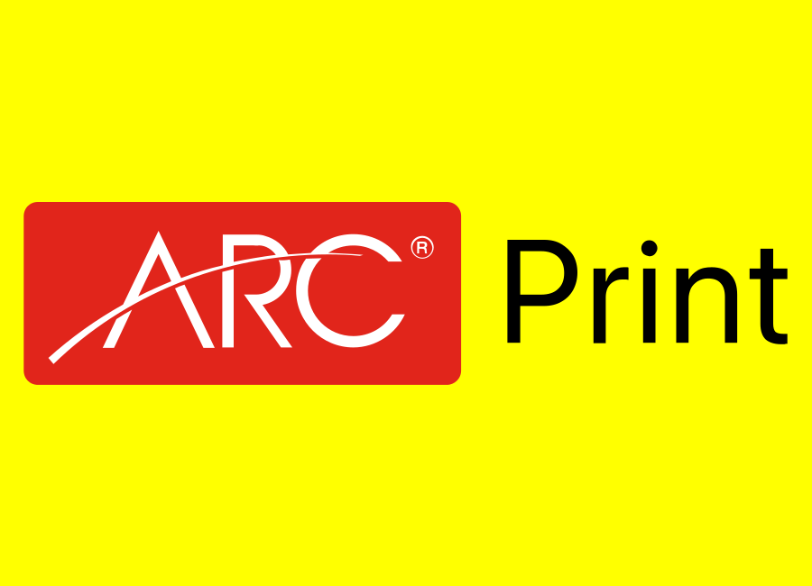Arc PrintImproved discoverability through GSC-led opportunity analysis, page-level SEO fixes, content refreshes, and site health improvements.Google Search Console Blog SEO On-page SEO Technical QA
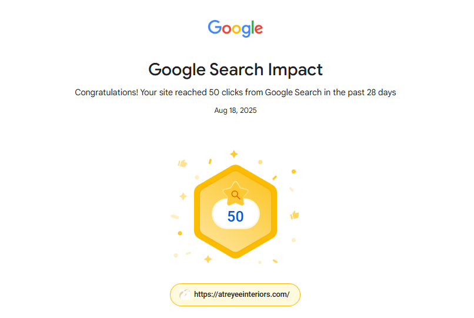Search impact50-click milestoneAtreyee Interiors reached 50 Google Search clicks in a 28-day period.
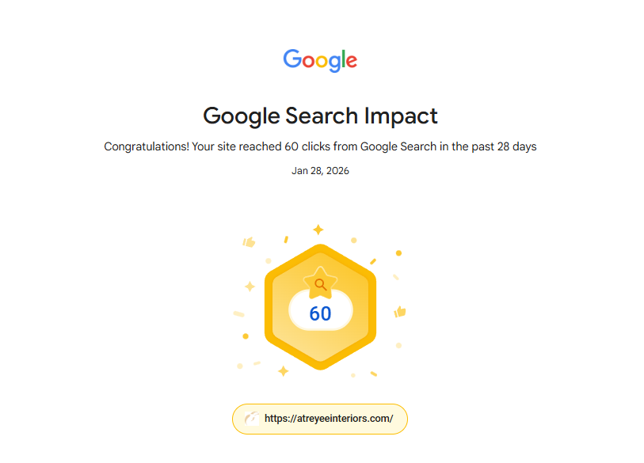Search growth60-click milestoneLater milestone shows growth to 60 Google Search clicks in a 28-day period.
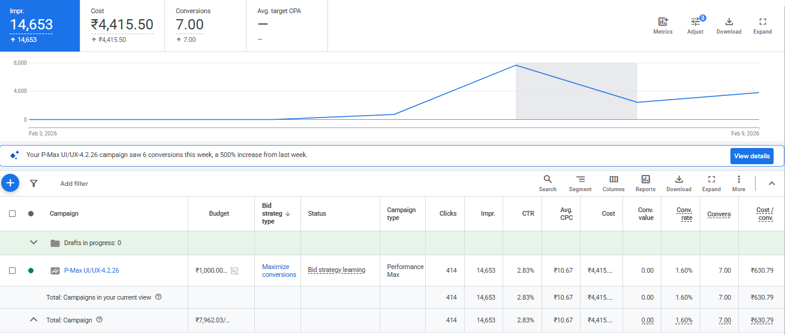Google AdsPerformance Max campaignRs 4,415.50 spend produced 414 clicks and 7 conversions, with the account insight noting a 500% weekly conversion increase.
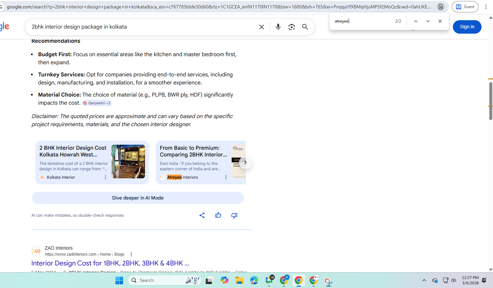AI citation2BHK interior design packageAtreyee Interiors appears as a cited source in an AI Overview recommendation set.
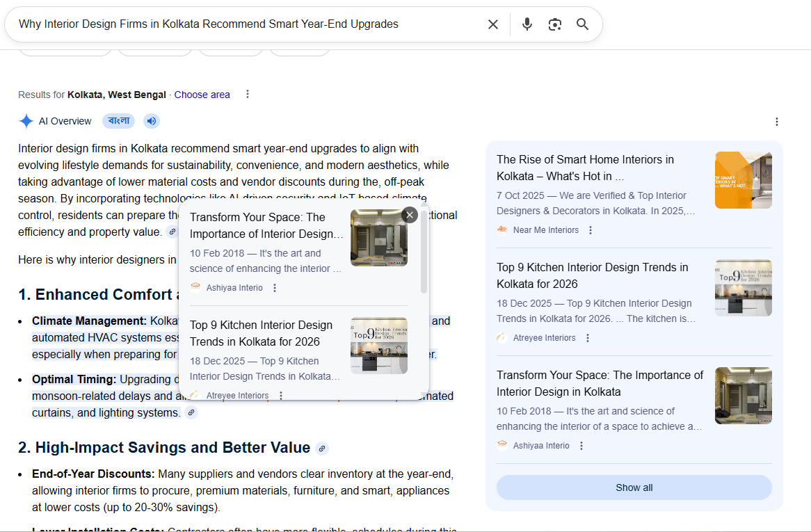Topical authoritySmart year-end upgradesContent appears in AI Overview supporting links for interior design upgrade intent.
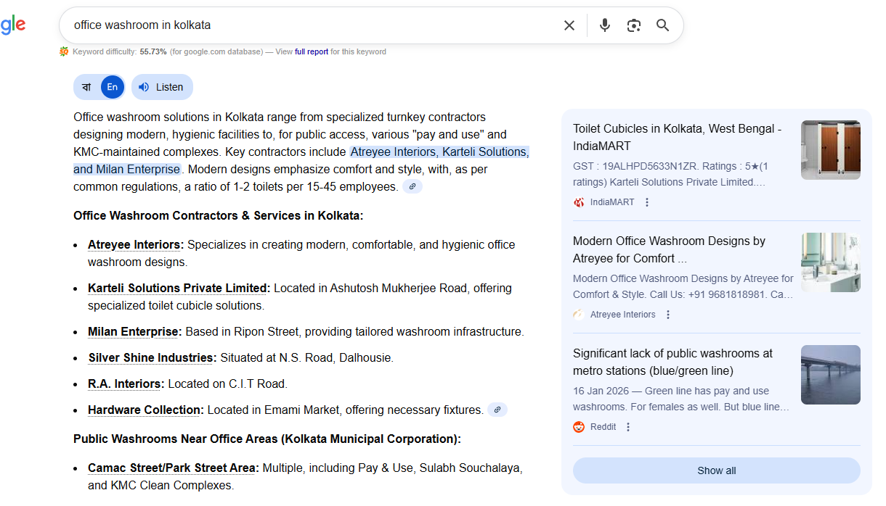Entity mentionOffice washroom servicesAtreyee Interiors is listed among relevant contractors in the AI-generated answer.
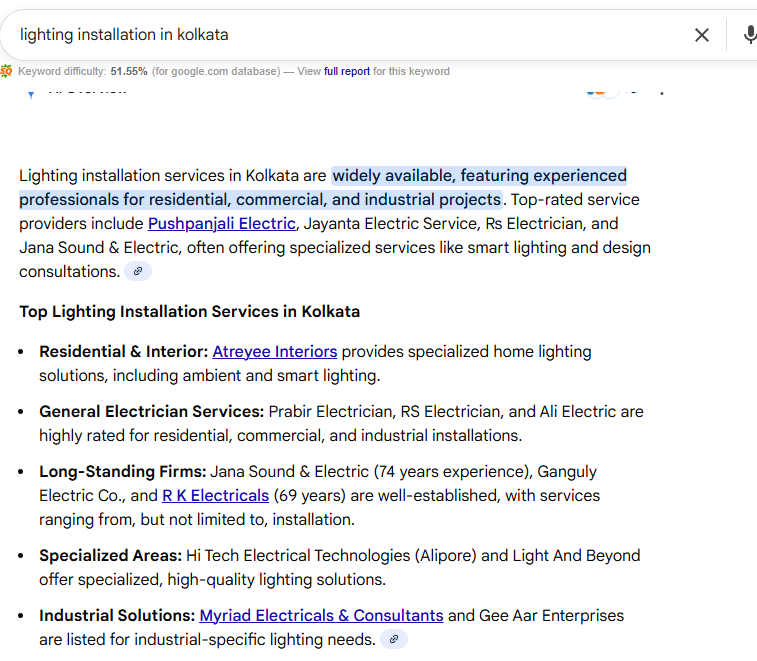Service visibilityLighting installationAtreyee Interiors is mentioned for specialized home lighting and smart lighting solutions.
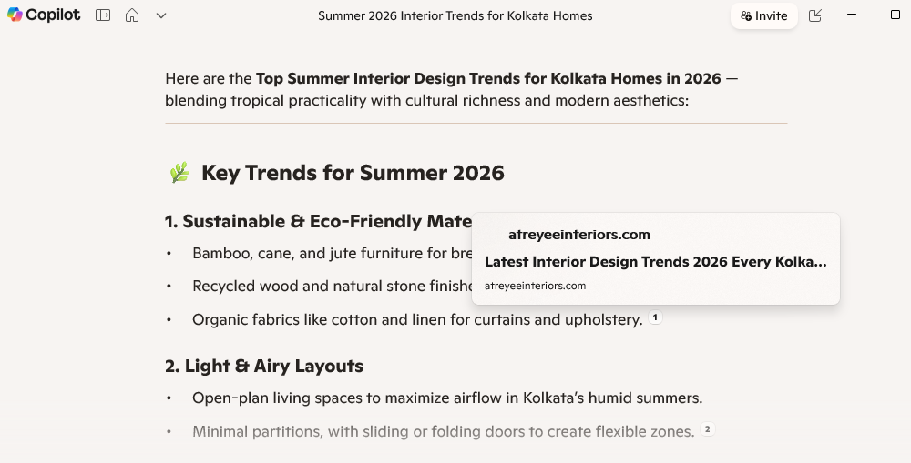Copilot citationSummer interior trendsAtreyee Interiors appears as a cited source for Kolkata home interior trend content.
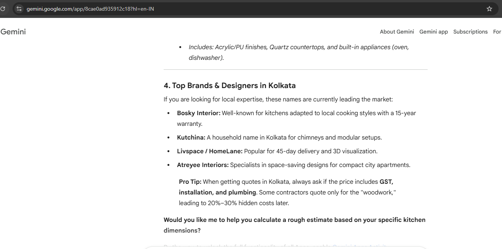Gemini shortlistTop kitchen brandsAtreyee Interiors is listed among leading Kolkata brands and designers.
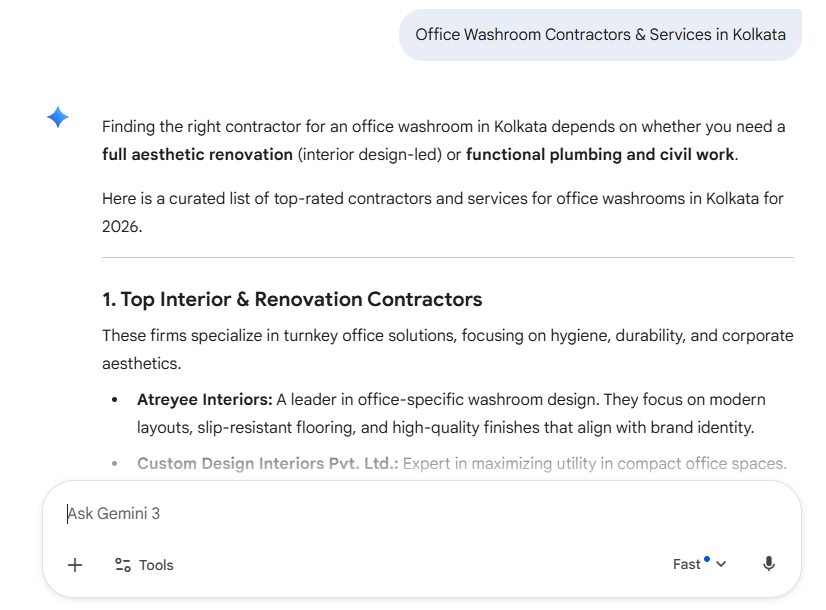Gemini recommendationOffice washroom contractorsAtreyee Interiors appears as a leader for office-specific washroom design.
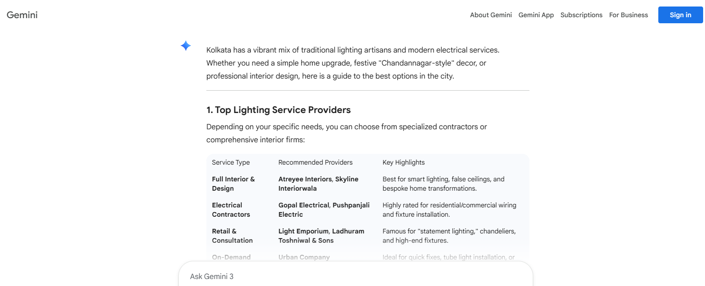Service mappingLighting service providersAtreyee Interiors is mapped to full interior and design lighting solutions.
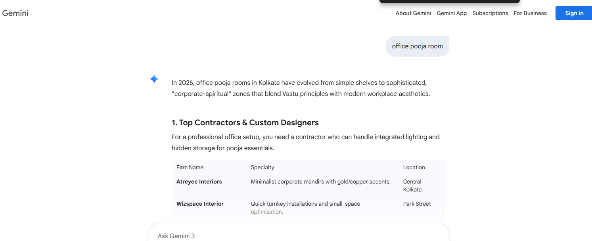Niche intentOffice pooja roomAtreyee Interiors appears for specialized corporate-spiritual workplace design intent.
SEO, GEO and AIOTechnical audits, schema, ranking strategy, AI search readiness, content optimization, and migration support.
Web and CMS optimizationWordPress, Duda, Squarespace, Weebly, and Webflow improvements for UX, speed, indexing, and conversions.
PPC and performanceGoogle Ads, Meta Ads, Performance Max, ecommerce funnels, ROAS tracking, and campaign reporting.
AI-augmented workflowsClaude, Perplexity, Grok, Jasper, Writesonic, Copy.ai, MarketMuse, Surfer SEO, and AdCreative.ai.